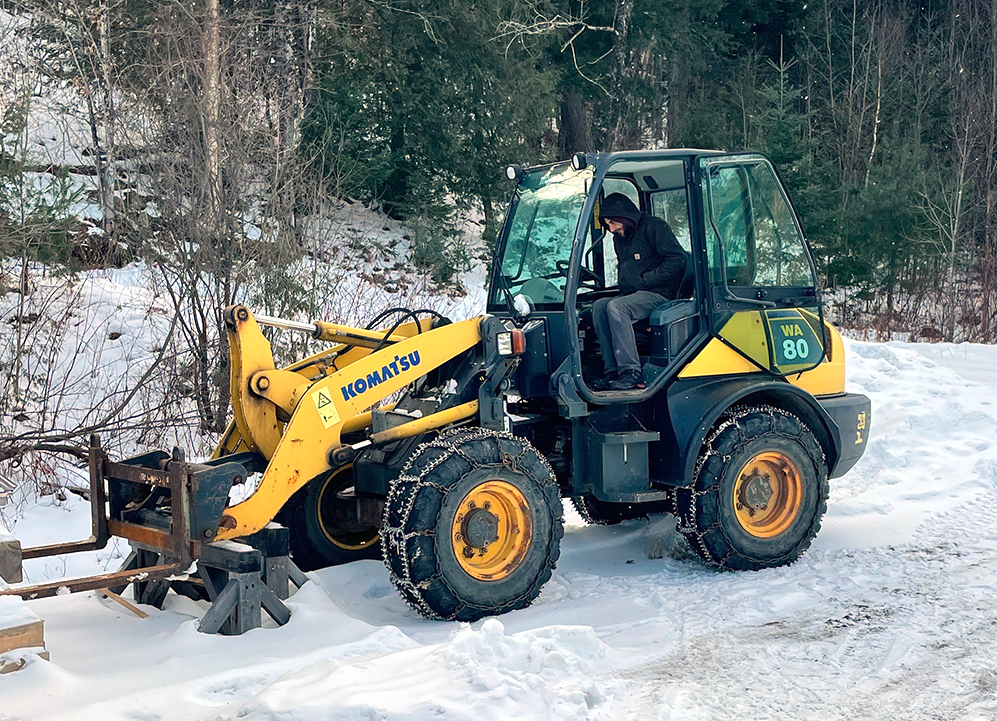

16/01
Vershire → Ridgewood
Journée road-trip pour retourné à la maison.
Grimpe à
GP 81 avec Phyllis en fin de journée.
Croissants fait-maison pour le petit-déjeuner.
Directions Bethel pour un sandwhich et un hot cider à
Babes. Meatload pour le souper. Ensuite on a regardé
American Werewolf in London.
Matinée passée à couper du bois avec Mark. Ensuite on est aller ranger deux trois choses au shop. Rejoinds Molly en fin de journée pour une balade et burger à Worthy Burger.

13/01
Ridgewood → Vershire
Partit tôt le matin direction Vermont. Traditionel stop à
Brownswille pour un sandwhich ensuite direction Vershire pour rejoindre Molly et Mark.
Schnitzel et profiteroles.
Boulot, journée chaotic.
Petite session solo de grimpe à
Metro Rock les blocs étaient montés pour la compétition alors j'ai finis la session à l'assurage automatique.
Boulot boulot...
Fait trop froid pour aller dehors.
Soirée de grimpe à
GP81 avec Kenny. Bu un verre avec Evelyne, Kenny et Kevin à
Ramona. Finit notre soirée par une pizza à
Paulie Gee.
Commencé notre week-end par un petit déjeuner à
Deville restaurant Japonais. Tartine et Yuzu Lemonade. Balade dans china town. Visité un nouveau libraire
You and Me, un shop de vinyl.
Petit week-end au
Standard Hotel.
Jour de travail normal.
Par contre, j'ai compris comment utiliser le scanner pour des images de haute-résolutions.
Blues de la troisième dose. Cloué sur le canapé toute la journée. Après une balade dans l'après-midi je commence à me sentir comme normal.
02/01
Williamsburgh & Ridgewood,
Session de grimpe à
Vital avec Louis et Brenda.
Balade vers l'arrêt de
Mont-Rose pour aller boire un verre à
Tradesman.
01/01
LES & Ridgewood, NYC
Commencé la journée par une balade pluvieuse dans le
Lower East Side.
Le reste de la journée tranquille à la maison.